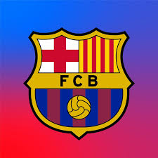

El Fútbol Club Barcelona (en catalán: Futbol Club Barcelona), conocido popularmente como Barça,[n. 1] es una entidad polideportiva con sede en Barcelona (España). Fue fundado como club de fútbol el 29 de noviembre de 1899 y registrado oficialmente el 5 de enero de 1903.[8][9][10]

Tanto el club como sus hinchas reciben el apelativo de «culers» (pronunciado culés),[11] y también, en referencia a sus colores, «azulgranas»[3] o «blaugranas».[12][n. 2] En su oficina de atención al barcelonista se atiende en los tres idiomas oficiales del club, que son: el catalán, el castellano y el inglés.[13
